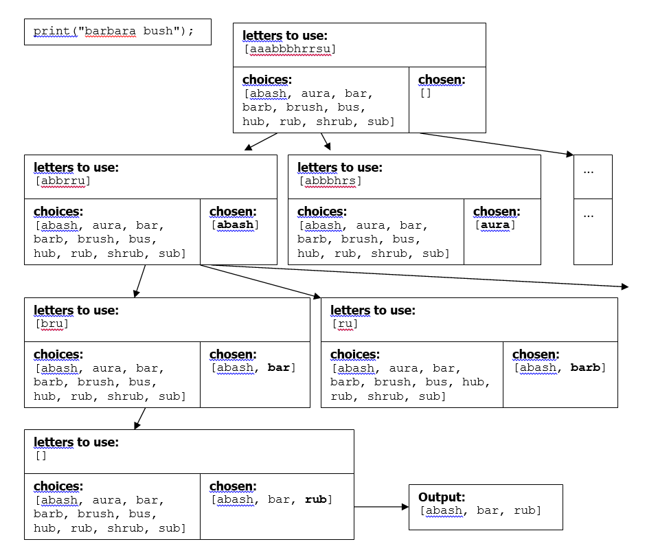

public static void main(String[] args) throws FileNotFoundException {
String wordList = args[0];
String word = args[1];
int maxAnas = Integer.valueOf(args[2]);
if (maxAnas == 0) maxAnas = -1; // set to -1 for no limit
System.out.println("Phrase to scramble: " + word);
HashSet<String> validWords = getWordList(wordList);
HashSet<String> solutions = new HashSet<String>();
ArrayList<Character> allChars = getChars(word);
getCombinations(allChars, "", validWords, solutions);
ArrayList<String> orderedSolution = new ArrayList<String>(solutions);
Collections.sort(orderedSolution);
System.out.println("\nAll words found in " + word + ":");
System.out.println(orderedSolution);
ArrayList<String> result = new ArrayList<String>();
System.out.println("\nAnagrams for " + word + ":");
ArrayList<ArrayList<String>> allResults = new ArrayList<ArrayList<String>>();
getAnagrams(word.length(), orderedSolution, word, result, maxAnas, 0, allResults);
for (int i = 0; i < allResults.size(); i++) System.out.println(allResults.get(i));
}Programming Assignment 03
Deadline: September 27, 2024 – Wednesday, 11:30pm
PA3-Anagrams Assignment
Learning Objectives
The goal of this assignment is to practice the following decomposition, algorithm pattern, and data structure approaches.
Algorithmic pattern: recursive backtracking
Decomposition approach: multiple methods
Data structure: arrays and collections
Anagrams
An anagram is a word or phrase made by rearranging the letters of another word or phrase. For example, the words “midterm” and “trimmed” are anagrams. If you ignore spaces and capitalization and allow multiple words, a multi-word phrase can be an anagram of some other word or phrase. For example, the phrases “Clint Eastwood” and “old west action” are anagrams.
In this assignment, you will create a program called Anagrams.java that uses a word list to find all anagram phrases that match a given word or phrase. To use the program, command line options will be provided to indicate a word list file, phrase with no spaces to find anagrams of, and a limit on the number of words in the found anagrams (or 0 to indicate no limit).
For the example command line options:
words1.txt barbarabush 0the output of your program should be the following:
Phrase to scramble: barbarabush
All words found in barbarabush:
[abash, aura, bar, barb, brush, bus, hub, rub, shrub, sub]
Anagrams for barbarabush:
[abash, bar, rub]
[abash, rub, bar]
[bar, abash, rub]
[bar, rub, abash]
[rub, abash, bar]
[rub, bar, abash]Here’s an example of the command line options (file name, word to scramble, max number of anagrams):
words3.txt defleppard 0Getting Started
Name your class Anagrams.
Submit your Anagrams.java file to gradescope.
Implementation Details:
Your program should obtain the word list file name, phrase, and max number of words in each possible anagram from the array of strings passed to main. Your program should read all of the words from the word list file and use them to generate the required anagrams. You can assume that the word list file will contain one word per line. You can also assume the command-line input will be well formed.
You will want to find all possible words that can be found by using subsets of letters from the provided phrase. For example, in the phrase hairbrush the following words from words1.txt can be found:
All words found in hairbrush:
[bar, briar, brush, bus, hub, huh, hush, rub, shrub, sir, sub]You should use recursive backtracking to find and print all anagrams that can be formed using all of the letters of the given phrase. Each phrase should include at most max words. If max=0 then all possible words should be specified. Your output should exactly match the provided examples, including order and formatting. For example, if your anagram solver is using the word list corresponding to words1.txt and a user types the phrase hairbrush, with a max of 0 your program should produce the following output:
[bar, huh, sir]
[bar, sir, huh]
[briar, hush]
[huh, bar, sir]
[huh, sir, bar]
[hush, briar]
[sir, bar, huh]
[sir, huh, bar]If your anagram solver is using the word list corresponding to words1.txt and the user types the phrase hairbrush and a max of 2, your program should produce the following output:
[briar, hush]
[hush, briar]Recursive Algorithm:
Generate all anagrams of a phrase using recursive backtracking. Many backtracking algorithms involve examining all combinations of a set of choices. In this problem, the choices are the words that can be formed from the phrase. A “decision” involves choosing a word for part of the phrase and recursively choosing words for the rest of the phrase. If you find a collection of words that use up all of the letters in the phrase, it should be printed as output.
Part of your grade will be based on efficiency. One way to implement this program would be to consider every word in the word list as a possible “choice.” However, this would lead to a massive decision tree with lots of useless paths and a slow program. Therefore for full credit, to improve efficiency when generating anagrams for a given phrase, you should first find the collection of words contained in that phrase and consider only those words as “choices” in your decision tree. You should also backtrack immediately once exceeding the max.
The following diagram shows a partial decision tree for generating anagrams of the phrase barbarabush.
Notice that some paths of the recursion lead to dead ends. For example, if the recursion chooses aura and barb, the letters remaining to use are [bhs], and no choice available uses these letters, so it is not possible to generate any anagrams beginning with those two choices. In such a case, your code should backtrack and try the next path.
One difference between this algorithm and other backtracking algorithms is that the same word can appear more than once in an anagram. For example, from barbara bush you might extract the word bar twice.

Write other methods
An important aspect of simplifying the solution to many backtracking problems is the separation of recursive code from code that manages low-level details of the problem. We have seen this in several of our backtracking examples, such as Dice roll sum and 8 queens. You should follow a similar strategy in this assignment. The low-level details for anagrams involve keeping track of letters and figuring out when one group of letters can be formed from another.
Your code should work with this main (do not change this when testing your code, since this is what gradescope will be expecting):
Development Strategy and Hints
Your program should produce the anagrams in the same format as in the expected output files. The easiest way to do this is to build up your answer in a list, or other ordered collection. Then you can println the collection and it will have the right format.
Several different word list files are provided. We recommend initially using a very small word list words1.txt to make testing easier. But once your code works with this word list, you should test it with larger word lists such as the provided words2.txt and words3.txt.
You can find other larger word lists here:
http://www.puzzlers.org/dokuwiki/doku.php?id=solving:wordlists:start
One difficult part of this program is limiting the number of words that can appear in the anagrams. We suggest you do this part last, initially printing all anagrams regardless of the number of words.
Grading Criteria
A total of 80% of this assignment grade will be correctness (80/100). For this assignment, there will be some private test cases. Any time you submit to gradescope, it will tell you how many of the 80 correctness points you have earned.
The other 20% (20/100) of the grade will be your decomposition and code clarity.
Decomposition:
Should just use
staticmethods in the singleAnagramsclass.Use a single file. This should be a small program (<200 lines). We do not count any of the comments in the file header toward this 200 lines.
Each
staticmethod should be less than 30 lines. The method header won’t be included in the 30 lines.Make things as simple as possible.
- Nested loops and conditionals are ok if they are following provided recursive backtracking code example templates. Make an effort to simplify conditionals as much as possible and explain them clearly in comments.
- Avoid too many levels of user-defined methods calling other user-defined methods.
Your code should be decomposed well.
mainshould be a good summary of your program and no method should be overly long or trivial. Your methods should not be chained. Do NOT have main just call one method that does everything.Part of your grade will come from appropriately utilizing recursive backtracking to implement your algorithm as described previously. We will grade on the elegance of your recursive algorithm; do not create special cases in your recursive code if they are not necessary or repeat cases already handled.
Redundancy is a grading focus; some tasks are similar in behavior or based off of other tasks. You should avoid repeated logic as much as possible.
Code Clarity:
YOU should be able to read, understand, and explain your own code a couple days after you wrote it.
The file header should include instructions on how someone would use this program and what typical inputs would look like.
Use meaningful variable names. Loop iterators can be simple (
ifor integers,sfor strings,nfor numbers, etc.). Otherwise you should avoid single letter variable names. Name Variables in camelCase.The clearest code examples will be anonymously shown in class.
The most obfuscated code examples will be anonymously shown in class with suggestions for improvement.
The coding style in terms of spacing, etc. should be done automatically every time you save in Eclipse. As long as you stick with those defaults, the syntax style should be fine.
Write your own code. We will be using a tool that finds overly similar code. Do not look at other students’ code. Do not let other students look at your code or talk in detail about how to solve this programming project.
Submission
As with PA1 and PA2, for PA3 you are required to submit your Anagrams.java solution to gradescope.
Package information:
package com.gradescope.anagrams;
Academic Integrity
Write your own code. We will be using a tool that finds overly similar code. Do not look at other students’ code. Do not let other students look at your code or talk in detail about how to solve this programming project. Read the academy integrity page for more details on how we deal with violations in this course.